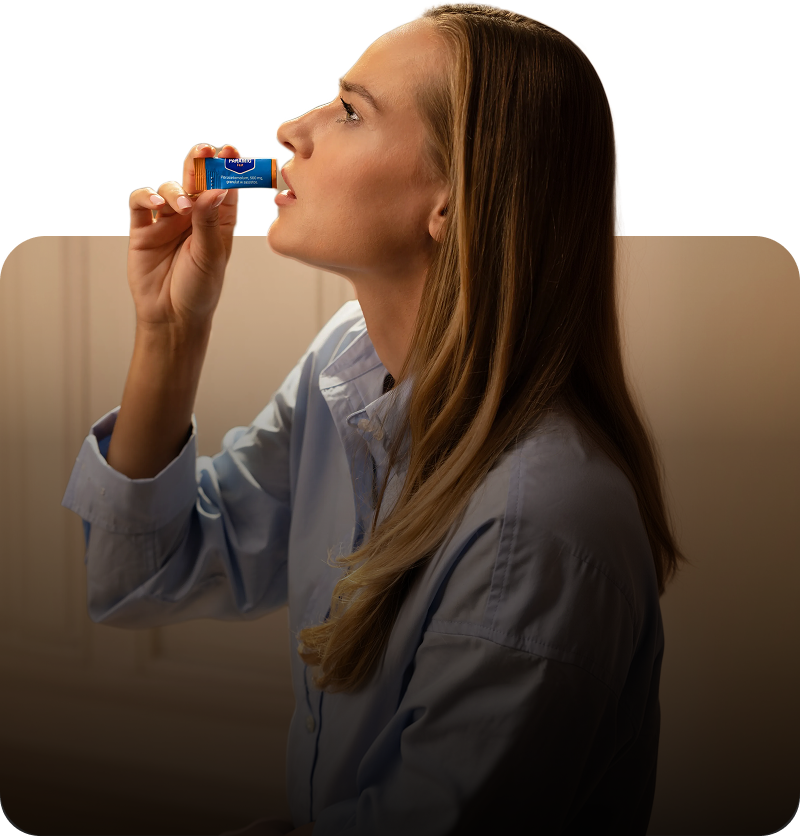
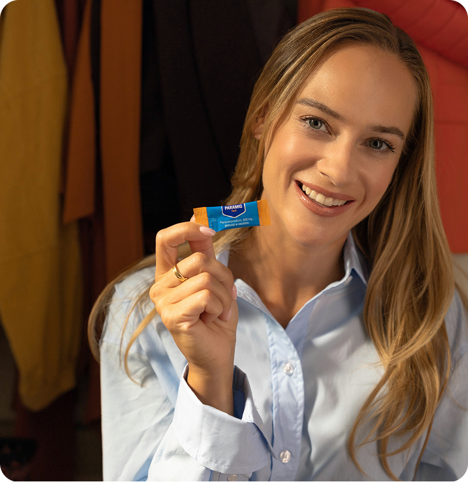
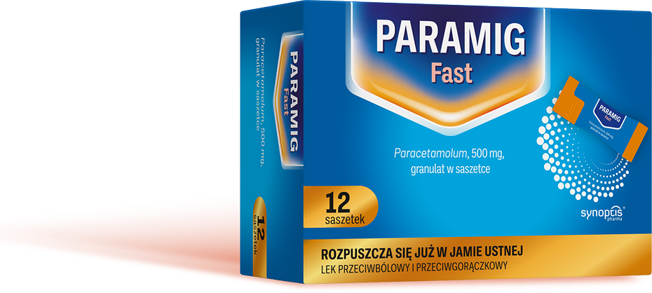
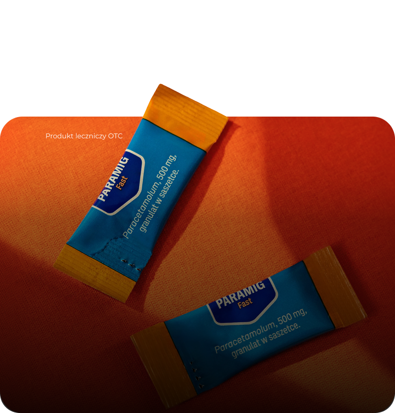
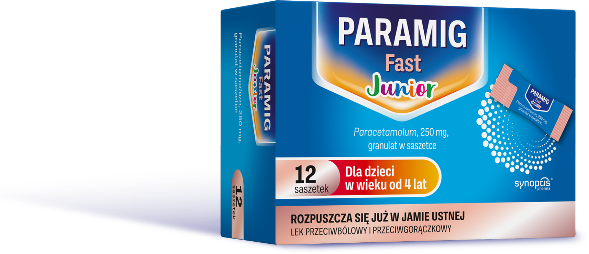

Cytrynowy smak i szybkość działania. Paramig Fast to produkt leczniczy wydawany bez przepisu lekarza.
Paramig Fast rozpuszcza się już na języku

Produkt leczniczy wydawany bez przepisu lekarza

W roli głównej...
Miej przy sobie Paramig Fast w wygodnej saszetce i zażyj bez popijania gdy pojawi się ból.

Cytrynowy smak i szybkość działania. Paramig Fast to produkt leczniczy wydawany bez przepisu lekarza.

Mikrogranulki o smaku cytrynowym rozpuszczają się na języku, wchłaniają się szybko i całkowicie. Lek nie wymaga popijania.
Niewielką saszetkę zabierzesz ze sobą wszędzie. A Paramig Fast działa szybciej niż tabletki.*
*Claude Dubray, Philippe Maincent & Jean Yves Milon (2021): From the pharmaceutical to the clinical: the case for effervescent paracetamol in pain management. A narrative review, Current Medical Research and Opinion, DOI: 10.1080/03007995.2021.1902297; Charakterystyka Produktu Leczniczego PARAMIG Fast 04.07.2025
A dla najmłodszych
Miej go przy sobie – gdziekolwiek jesteś z rodziną.
Szybkość to jego drugie imię.
na ból i gorączkę
od 4. roku życia
rozpuszczalne granulki
o cytrynowym smaku

Produkt leczniczy wydawany bez przepisu lekarza
Z Paramig Fast i Paramig Fast Junior
Paramig Fast łagodzi ból i zmniejsza gorączkę.
Tak! Paramig Fast można podać dzieciom od 8. roku życia (jeśli ważą przynajmniej 26 kg).
Dla młodszych dzieci – od 4. roku życia – lepiej sprawdzi się Paramig Fast Junior.
Paramig Fast: każda saszetka to 500 mg paracetamolu.
Paramig Fast Junior: każda saszetka zawiera połowę tej dawki – 250 mg.
Po przyjęciu leku mikrogranulki rozpuszczają się w ustach niemal natychmiast. Paracetamol wchłania się szybko i całkowicie, a jego najwyższe stężenie we krwi pojawia się po około 30–60 minutach.
Treść odpowiedzi zostanie uzupełniona.
Treść odpowiedzi zostanie uzupełniona.
Treść odpowiedzi zostanie uzupełniona.
Treść odpowiedzi zostanie uzupełniona.
Treść odpowiedzi zostanie uzupełniona.
Treść odpowiedzi zostanie uzupełniona.
Treść odpowiedzi zostanie uzupełniona.
Treść odpowiedzi zostanie uzupełniona.
PARAMIG Fast, 500 mg, granulat w saszetce.
Jedna saszetka zawiera 500 mg paracetamolu (Paracetamolum).
Charakterystyka Produktu Leczniczego 04.07.2025
PARAMIG Fast Junior, 250 mg, granulat w saszetce.
Jedna saszetka zawiera 250 mg paracetamolu (Paracetamolum).
Charakterystyka Produktu Leczniczego 04.07.2025
Produkt leczniczy Paramig Fast stosuje się w objawowym leczeniu łagodnego do umiarkowanego bólu oraz gorączki.
Synoptis Pharma Sp. z o.o. ul. Krakowiaków 65, 02-255 Warszawa.
PAR/10/2026/20